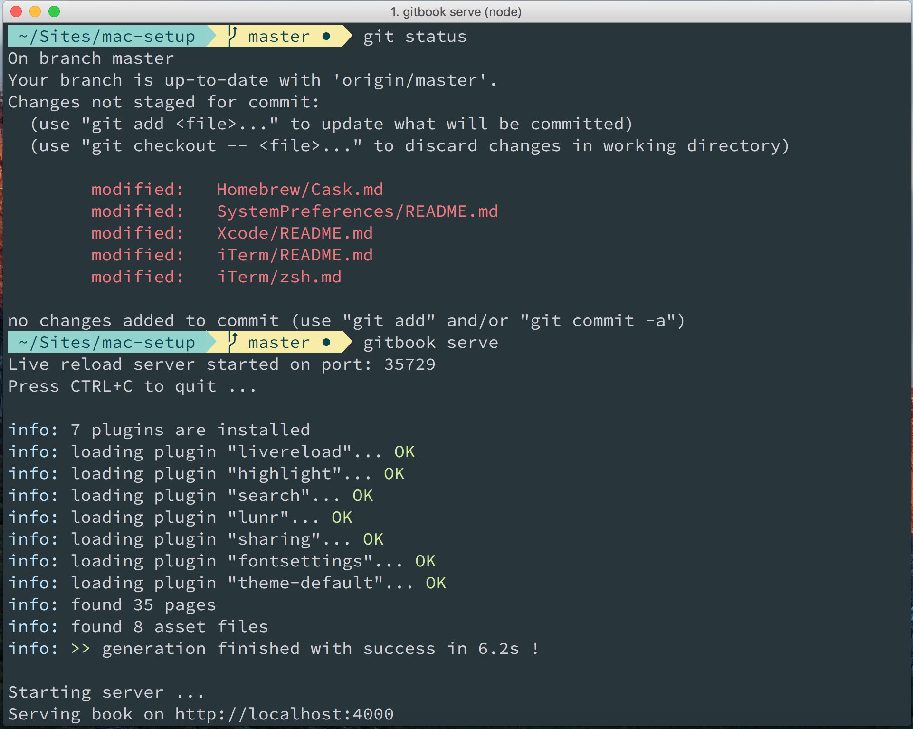

iTerm2
Since we're going to be spending a lot of time in the command-line, let's install a better terminal than the default one. Download and install iTerm2.
In Finder, drag and drop the iTerm Application file into the Applications folder.
You can now launch iTerm, through the Launchpad for instance.
Let's just quickly change some preferences.
Colors and Font Settings
- Go to profiles -> Default -> Terminal -> Check silence bell
- Change the cursor text and cursor color to yellow make it more visible
- Change the font to 18pt Source Code Pro Lite. Source Code Pro can be downloaded from here.
- Download Material Shell from here. And then set these to your default profile colors.
